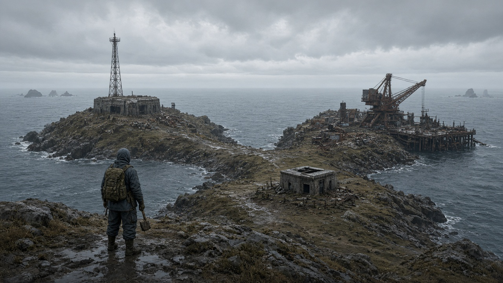

SOLO · NO PVP
The wipe is the game.
Drop a 1×1, gather, search Train Yard and Military Tunnels, identify the wreck, assemble the skiff, extract. About twenty minutes. No PvP. Unofficial fan project — not affiliated with Facepunch.
DAY 1
Shore Camp
Drop a 1×1, then gather.
Extraction skiff
Island
The island is the board. Click adjacent ground to walk. Click HERE for that tile’s acts. A claimed bed Recalls when you are away. Distant chrome is name-only.
Base
Grow after the 1×1. Stations live in rooms. Pack chips sit on the portrait edge.